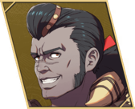
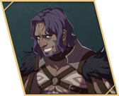

Path 3: Theodora
Battalions and Gambits; tanks and dodgers. Fast renown but heavy support needs.
First Hard path. Theodora's defensive kit (Royal Resolve, Guardian) and two early healers make the jump to Hard smoother. Final builds for Nezha and Nuzzuo.
Checklist
- Before starting: title screen → Descend Again → pick Hard and redo the Prologue. Route progress is kept.
- War Preparations / 'Send Supplies' tasks: 8 → Cataphract (finish by Ch8, missable), 10 → Guardian (by Ch9), 14 → Dragoon (by Ch11). Tobias and Esmeralda need Cataphract.
- Orchel's paralogue, Ch12, 10/18–10/24 — required for Diego, and Orchel in Part III.
- Dietrich's paralogue, Ch12, 10/16–10/24 — Salamander.
- Cai's paralogue, Ch12, accept 10/16–10/22 — only if skipped on Dietrich.
- Clear this route: Klapka only joins Part III if Theodora's path is cleared (Game8 tested).
- Nuzzuo and Inyoni-style late recruits: at the start of Ch9 you usually already have the renown (PlayBlackBox).
- Battalions can't be equipped by flying or mounted units.
- Only route that can sail to the south-east island; farm and fish here for Part III materials (NGA).
Roster (15 units)
| Unit | Joins / recruit | Ends Part I as | Role | Copy |
|---|---|---|---|---|
| Theodora | Lord | Guardian | Lance tank | |
| Sofia | Tutorial · S1/R2 | Bishop | Main healer | |
| Bonaventure | Auto, Ch1 | Troubadour | Mounted mage-healer | |
| Tobias | Auto, Ch1 | Cataphract | Armored cavalry | |
| Lysander | Auto, Ch4 | Dragoon | Speed-drain flier | |
| Lilian | Auto, Ch4 | Sniper | Archer | |
| Alexandra | S1/R6, Ch8 | Dragoon | Flier | |
| Halvin | S3/R7 + 10 Dates (NGA says 3 — check in game) | Forest Knight | Mounted archer | |
| Diego | Orchel's paralogue · S2/R8 | Shido | Swordsman | |
| Nezha | S2/R6 + 3 Sandworm Meat | Warrior | Melee carry | final |
| Nuzzuo | S1/R6 + 3 Iron Bows, Ch9 start | Ranger | Archer carry | final |
| Dante | S3/R6 + 8,000G | Ovate | Dark mage | |
| Loretta | S3/R5 + 3 Iron Swords | Bardinger | Flier → cavalry sword | |
| Zarcone | S1/R4 · refuse 10,000G, 1,000G, 100G, then pay 10G | Warrior | Axe fighter | |
| Mu | S3/R9 + 3 Glirmosa | Ranger | Bow/sword skirmisher | early copy |
Builds

Theodora
赛奥朵拉 · Game8 tier Lord
- Gladiator Beginner start
ranks: Gauntlet D / Axe D / Sword D - Armored Ornius Rider Specialty Lv20
ranks: Riding D; Axe C / Spear C - Guardian Advanced Lv35 (after unlock)
ranks: Spear B · unlock on Dietrich: Renown 6 challenge, or Theodora: 10 War Preparations tasks
- Joins
- Lord
- Role
- Lance tank
- Train
- Spear to B, Riding to D.
- Gear
- Spears; Pilum from Theodora's paralogue.
- Mount etc.
- Battalion on her once she's infantry (Guardian).
- Level in
- Gladiator: HP 80% · Def 40% · Res 30%
Armored Ornius Rider: HP 80% · Def 50% · Res 30%
Guardian: HP 80% · Def 50% · Res 45% - Master here
- Armored Ornius Rider → Sense Threat (Avo +20 vs foes effective against you); Guardian → Brace (Prt +3 after a kill until next phase)
- Farm only
- Cataphract → Pavise (20%: halve physical damage); Bardinger → Aegis (20%: halve magic damage)
- Equip order
- Royal Resolve → Direct Hit → Unstoppable Force → Pavise → Brace → Aegis → Spear Lv. 3 at B+ (Hit/Avo +5)
- Abilities
- Royal Resolve (30% chance to halve damage), Direct Hit, Unstoppable Force
- Boons
- Authority, White Magic, Spear
- Banes
- Black Magic
- Why
- Game8's line. Part III: Sentinel → The Trident.

Sofia
索绯雅 · Game8 tier S
- Diviner Beginner start
ranks: White D / Black D - Priest Specialty Lv20
ranks: White C - Bishop Advanced Lv35
ranks: White B
- Joins
- Tutorial · S1/R2
- Role
- Main healer
- Train
- White Magic to B.
- Gear
- Physic staff. Healing range +1 at Lv20 and +2 at Lv35 (PlayBlackBox).
- Level in
- Diviner: Mag 60% · Res 50% · Spd 40%
Priest: Mag 55% · Res 55% · Spd 45%
Bishop: Mag 60% · Res 60% · Spd 40% - Master here
- Priest → Piety (Lck +3); Bishop → Barrier (Adjacent allies Res +3)
- Farm only
- Troubadour → Song of Courage (Allies in range Dex/Spd +2); Shaman → Bind Dexterity (Adjacent foes Dex −3)
- Equip order
- Healing Knowledge → Distant Healing → Barrier → Song of Courage → Piety → White Magic Lv. 3 at B+ (Hit/Avo +5)
- Abilities
- Healing Knowledge (+10 healing), Distant Healing (+heal range)
- Boons
- Bow, White Magic
- Banes
- Axe
- Why
- S-tier. Recruit first so Theodora can focus on the front (Game8 JP). Part III: Wiseman.

Tobias
托比亚斯 · Game8 tier A
- Gladiator Beginner start
ranks: Gauntlet D / Axe D / Sword D - Armored Ornius Rider Specialty Lv20
ranks: Riding D; Axe C / Spear C - Cataphract Advanced Lv35 (after unlock)
ranks: Heavy Armor E+, Riding D; Axe B / Spear B · unlock on Theodora: 8 War Preparations tasks by Ch8
- Joins
- Auto, Ch1
- Role
- Armored cavalry
- Train
- Heavy Armor to E+, Riding to D, Axe to B.
- Gear
- Axes (PlayBlackBox: great axe fighter).
- Level in
- Gladiator: HP 65% · Def 45% · Str 70%
Armored Ornius Rider: HP 65% · Def 55% · Str 60%
Cataphract: HP 70% · Def 55% · Str 75% - Master here
- Armored Ornius Rider → Sense Threat (Avo +20 vs foes effective against you); Cataphract → Pavise (20%: halve physical damage)
- Farm only
- Armored Knight → Great Counter (Atk +3 when the foe attacks first); Dreadnought → Focused Counter (Hit +10 when the foe attacks first)
- Equip order
- Power Arts → All-Out Attack → Pavise → Great Counter → Focused Counter → Axe or Spear Lv. 3 at B+ (Hit/Avo +5) → Pavise and Aegis stack with Buccar's Guardian's Duty (Game8)
- Abilities
- Power Arts, All-Out Attack
- Boons
- Axe, Heavy Armor, Riding
- Banes
- Sword
- Why
- Game8's line. Theodora-only unit. Part III: Great Knight.

Lysander
莱桑达 · Game8 tier B
- Gladiator Beginner start
ranks: Gauntlet D / Axe D / Sword D - Armored Ornius Rider Specialty Lv20
ranks: Riding D; Axe C / Spear C - Dragoon Advanced Lv35
ranks: Flying C; Axe B / Spear B · unlock on Cai: 'Special Request from Mom' (Renown 8), or Theodora: 14 War Preparations tasks
- Joins
- Auto, Ch4
- Role
- Speed-drain flier
- Train
- Riding D, then Flying to C, Spear and Axe to B. (Wing Soldier is female-only.)
- Gear
- Knight Killer from the Salamis capital shop (PlayBlackBox).
- Level in
- Gladiator: Spd 50% · Str 50% · Res 25%
Armored Ornius Rider: Spd 60% · Str 40% · Res 25%
Dragoon: Spd 50% · Str 45% · Res 35% - Master here
- Armored Ornius Rider → Sense Threat (Avo +20 vs foes effective against you); Dragoon → Besieger (Hit +20 vs foes on favourable terrain)
- Farm only
- Warrior → Practiced Art (Hit +10 when attacking with a combat art)
- Equip order
- Racing Attack → Accelerate → Sense Threat → Practiced Art → Besieger → Spear Lv. 3 at B+ (Hit/Avo +5) → Read the Winds (Flying rank D): Avo +10 vs bows — Game8 calls it a must for fliers
- Abilities
- Racing Attack, Accelerate
- Boons
- Axe, Flying, Riding, Spear
- Banes
- Gauntlet, Heavy Armor, Sword
- Why
- Weak early; his speed-drain skill arrives around Lv35 (CN). Flying line sets up Bau Lord, which a Bahamut player rates 4/5 for him (dodge tank with solid defenses).

Lilian
莉利安 · Game8 tier A
- Hunter Beginner start
ranks: Bow D / Sword D - Archer Specialty Lv20
ranks: Bow C - Sniper Advanced Lv35
ranks: Bow B
- Joins
- Auto, Ch4
- Role
- Archer
- Train
- Bow to B.
- Gear
- Bows.
- Mount etc.
- Battalion-capable infantry.
- Level in
- Hunter: Dex 65% · Str 35% · Spd 50%
Archer: Dex 65% · Str 40% · Spd 50%
Sniper: Dex 75% · Str 40% · Spd 50% - Master here
- Archer → Crescendo (Hit +3 per kill for the map (max +30)); Sniper → Marksmanship (Hit +15 with a bow)
- Farm only
- Ranger → Countershot (50%: counter adjacent foes with a bow); Warrior → Practiced Art (Hit +10 when attacking with a combat art)
- Equip order
- Safety First → Upper Hand → Crescendo → Marksmanship → Countershot → Bow Lv. 3 at B+ (Hit/Avo +5)
- Abilities
- Safety First, Upper Hand
- Boons
- Bow, Infantry
- Banes
- Gauntlet
- Why
- Game8's line. Part III: Bow Adept.

Alexandra
亚历珊德拉 · Game8 tier A
- Gladiator Beginner start
ranks: Gauntlet D / Axe D / Sword D - Wing Soldier Specialty Lv20
ranks: Flying D; Spear C / Sword C · female only - Dragoon Advanced Lv35
ranks: Flying C; Axe B / Spear B · unlock on Cai: 'Special Request from Mom' (Renown 8), or Theodora: 14 War Preparations tasks
- Joins
- S1/R6, Ch8
- Role
- Flier
- Train
- Flying to C, Spear and Sword.
- Gear
- Thunder Sword (17173, Game8 JP).
- Level in
- Gladiator: Spd 55% · Str 45% · Res 40%
Wing Soldier: Spd 55% · Str 35% · Res 45%
Dragoon: Spd 55% · Str 40% · Res 50% - Master here
- Wing Soldier → Protecting Wings (Res +3); Dragoon → Besieger (Hit +20 vs foes on favourable terrain)
- Farm only
- Armored Ornius Rider → Sense Threat (Avo +20 vs foes effective against you); Warrior → Practiced Art (Hit +10 when attacking with a combat art)
- Equip order
- Silver Maiden → Soar → Sense Threat → Protecting Wings → Practiced Art → Spear Lv. 3 at B+ (Hit/Avo +5) → Read the Winds (Flying rank D): Avo +10 vs bows — Game8 calls it a must for fliers
- Abilities
- Silver Maiden, Soar
- Boons
- Flying, Spear, Sword
- Banes
- Axe, Black Magic
- Why
- Game8's line. PlayBlackBox calls her the only flier worth it (40% Str growth). Part III: Celestial Trooper.

Halvin
哈尔温 · Game8 tier B
- Hunter Beginner start
ranks: Bow D / Sword D - Archer Specialty Lv20
ranks: Bow C - Forest Knight Advanced Lv35
ranks: Riding D, Bow B
- Joins
- S3/R7 + 10 Dates (NGA says 3 — check in game)
- Role
- Mounted archer
- Train
- Bow to B, Riding to D.
- Gear
- Bows; NGA says an early recruit brings a short bow.
- Level in
- Hunter: Dex 70% · Str 35% · Def 30%
Archer: Dex 70% · Str 40% · Def 35%
Forest Knight: Dex 70% · Str 40% · Def 35% - Master here
- Archer → Crescendo (Hit +3 per kill for the map (max +30)); Forest Knight → Hunter's Eye (Atk +3 on bow follow-ups)
- Farm only
- Sniper → Marksmanship (Hit +15 with a bow); Armored Ornius Rider → Sense Threat (Avo +20 vs foes effective against you)
- Equip order
- Adaptability → Halt Advance → Crescendo → Marksmanship → Hunter's Eye → Bow Lv. 3 at B+ (Hit/Avo +5) → Canto from a bonded mount (Cai route)
- Abilities
- Adaptability, Halt Advance
- Boons
- Bow, Riding
- Banes
- Axe
- Why
- Game8's line. Part III: Bow Knight.
Diego
迪雅各 · Game8 tier B
- Gladiator Beginner start
ranks: Gauntlet D / Axe D / Sword D - Myrmidon Specialty Lv20
ranks: Sword C - Shido Advanced Lv35
ranks: Sword B
- Joins
- Orchel's paralogue · S2/R8
- Role
- Swordsman
- Train
- Sword to B.
- Gear
- Swords.
- Level in
- Gladiator: Str 50% · Spd 45% · Dex 60%
Myrmidon: Str 40% · Spd 60% · Dex 70%
Shido: Str 45% · Spd 60% · Dex 70% - Master here
- Myrmidon → Ravaging Arts (+6 damage on a critical); Shido → Ever Vigilant (Heal a little HP after a critical kill)
- Farm only
- Warrior → Practiced Art (Hit +10 when attacking with a combat art); Rogue → In Shadow (Avo +10 in the next combat after a kill)
- Equip order
- No Mercy → Caretaker → Practiced Art → Ravaging Arts → Ever Vigilant → Sword Lv. 3 at B+ (Hit/Avo +5)
- Abilities
- No Mercy, Caretaker
- Boons
- Bow, Infantry, Sword
- Banes
- Black Magic
- Why
- Game8's line. Joins late (Orchel's paralogue is 10/18+).

Nezha final build · merge source
哪咤 · Game8 tier A+
- Gladiator Beginner start
ranks: Gauntlet D / Axe D / Sword D - Brigand Specialty Lv20
ranks: Axe C / Sword C - Warrior Advanced Lv35
ranks: Gauntlet B / Axe B / Sword B
- Joins
- S2/R6 + 3 Sandworm Meat
- Role
- Melee carry
- Train
- Gauntlet, Axe and Sword to B.
- Gear
- Gauntlets and swords; Quick Draw on player phase.
- Level in
- Gladiator: HP 55% · Str 65% · Def 35%
Brigand: HP 60% · Str 70% · Def 40%
Warrior: HP 65% · Str 75% · Def 40% - Master here
- Brigand → Regroup (Avo +20 for the combat after a foe misses); Warrior → Practiced Art (Hit +10 when attacking with a combat art)
- Farm only
- Pugilist → Attack, Get Back (Avo +10 when using a combat art); Armored Knight → Great Counter (Atk +3 when the foe attacks first)
- Equip order
- Quick Draw → Never Stop → Practiced Art → Regroup → Attack, Get Back → Axefaire or Fistfaire at S+ (Hit/Avo +10, Atk +3)
- Abilities
- Quick Draw (+3 Atk when moving first), Never Stop
- Boons
- Gauntlet, Infantry, Sword
- Banes
- Spear
- Why
- Game8's line, on Hard. 17173 puts him in the Part III melee trio. Merge source for Part III (Battlemaster).

Nuzzuo final build · merge source
努佐 · Game8 tier A
- Hunter Beginner start
ranks: Bow D / Sword D - Archer Specialty Lv20
ranks: Bow C - Ranger Advanced Lv35
ranks: Bow B / Sword B · unlock on Dietrich: Renown 10 challenge, or Leda: tavern show #4
- Joins
- S1/R6 + 3 Iron Bows, Ch9 start
- Role
- Archer carry
- Train
- Bow and Sword to B.
- Gear
- Iron bows → best bows. PlayBlackBox: strongest complete form on this route.
- Level in
- Hunter: Dex 55% · Str 50% · Spd 65%
Archer: Dex 55% · Str 55% · Spd 65%
Ranger: Dex 60% · Str 55% · Spd 70% - Master here
- Archer → Crescendo (Hit +3 per kill for the map (max +30)); Ranger → Countershot (50%: counter adjacent foes with a bow)
- Farm only
- Sniper → Marksmanship (Hit +15 with a bow) — also arrives via the Part III merge; Warrior → Practiced Art (Hit +10 when attacking with a combat art)
- Equip order
- Har Hali Wisdom → Precision Strike → Crescendo → Marksmanship → Countershot → Bowfaire at S+ (Hit/Avo +10, Atk +3)
- Abilities
- Har Hali Wisdom, Precision Strike
- Boons
- Bow, Gauntlet, Sword
- Why
- Game8's line. Merge source for Part III (Bow Knight).
Dante
丹提 · Game8 tier B
- Diviner Beginner start
ranks: White D / Black D - Shaman Specialty Lv20
ranks: Black C - Ovate Advanced Lv35
ranks: Black B
- Joins
- S3/R6 + 8,000G
- Role
- Dark mage
- Train
- Black Magic to B.
- Gear
- Dark tomes (PlayBlackBox: his hexer → dark mage line means stats matter less).
- Level in
- Diviner: Mag 60% · Spd 40% · Res 50%
Shaman: Mag 60% · Spd 50% · Res 50%
Ovate: Mag 65% · Spd 45% · Res 55% - Master here
- Shaman → Bind Dexterity (Adjacent foes Dex −3); Ovate → Bind Speed (Adjacent foes Spd −3)
- Farm only
- Caladrius → Overtake (Mov +1 per kill until end of next turn (max +3)); Myrmidon → Ravaging Arts (+6 damage on a critical)
- Equip order
- Stage Directions → Dramatic Effect → Overtake → Ravaging Arts → Bind Speed → Black Magic Lv. 3 at B+ (Hit/Avo +5)
- Abilities
- Stage Directions, Dramatic Effect
- Boons
- Authority, White Magic, Black Magic
- Banes
- Gauntlet
- Why
- Game8's line.

Loretta
罗蕾塔 · Game8 tier A
- Ornius Rider Beginner start
ranks: Riding E+; Axe D / Spear D - Wing Soldier Specialty Lv20
ranks: Flying D; Spear C / Sword C · female only - Bardinger Advanced Lv35
ranks: Riding C; Spear C / Sword B
- Joins
- S3/R5 + 3 Iron Swords
- Role
- Flier → cavalry sword
- Train
- Flying D, then Riding C, Sword B.
- Gear
- Thunder Sword (Game8 JP).
- Level in
- Ornius Rider: Str 35% · Def 30% · Res 45%
Wing Soldier: Str 35% · Def 35% · Res 45%
Bardinger: Str 45% · Def 35% · Res 50% - Master here
- Wing Soldier → Protecting Wings (Res +3); Bardinger → Aegis (20%: halve magic damage)
- Farm only
- Caladrius → Overtake (Mov +1 per kill until end of next turn (max +3)); Warrior → Practiced Art (Hit +10 when attacking with a combat art)
- Equip order
- Steadfast → Peak Form → Aegis → Overtake → Practiced Art → Spear or Sword Lv. 3 at B+ (Hit/Avo +5) → Canto from a bonded mount (Cai route)
- Abilities
- Steadfast, Peak Form
- Boons
- Flying, Spear, Sword
- Banes
- Heavy Armor
- Why
- Game8's line. Part III: Celestial Trooper or Swordmaster.

Zarcone
札可捏 · Game8 tier B
- Gladiator Beginner start
ranks: Gauntlet D / Axe D / Sword D - Brigand Specialty Lv20
ranks: Axe C / Sword C - Warrior Advanced Lv35
ranks: Gauntlet B / Axe B / Sword B
- Joins
- S1/R4 · refuse 10,000G, 1,000G, 100G, then pay 10G
- Role
- Axe fighter
- Train
- Axe and Sword to B.
- Gear
- Axes.
- Level in
- Gladiator: HP 50% · Str 40% · Def 30%
Brigand: HP 55% · Str 45% · Def 35%
Warrior: HP 60% · Str 50% · Def 35% - Master here
- Brigand → Regroup (Avo +20 for the combat after a foe misses); Warrior → Practiced Art (Hit +10 when attacking with a combat art)
- Farm only
- Pugilist → Attack, Get Back (Avo +10 when using a combat art); Armored Knight → Great Counter (Atk +3 when the foe attacks first)
- Equip order
- Hatchet Man → Vulgar Conduct → Practiced Art → Regroup → Attack, Get Back → Axe or Gauntlet Lv. 3 at B+ (Hit/Avo +5)
- Abilities
- Hatchet Man, Vulgar Conduct
- Boons
- Axe, Sword
- Banes
- White Magic, Black Magic
- Why
- Game8's line. B-tier rotation unit.

Mu early copy
穆 · Game8 tier A+
- Hunter Beginner start
ranks: Bow D / Sword D - Archer Specialty Lv20
ranks: Bow C - Ranger Advanced Lv35
ranks: Bow B / Sword B · unlock on Dietrich: Renown 10 challenge, or Leda: tavern show #4
- Joins
- S3/R9 + 3 Glirmosa
- Role
- Bow/sword skirmisher
- Train
- Bow and Sword to B.
- Gear
- Bows; swords as backup.
- Level in
- Hunter: Dex 60% · Str 50% · Spd 60%
Archer: Dex 60% · Str 55% · Spd 60%
Ranger: Dex 65% · Str 55% · Spd 65% - Master here
- Archer → Crescendo (Hit +3 per kill for the map (max +30)); Ranger → Countershot (50%: counter adjacent foes with a bow)
- Farm only
- Sniper → Marksmanship (Hit +15 with a bow)
- Equip order
- Signs of Growth → Warrior's Blood → Crescendo → Marksmanship → Countershot → Bow Lv. 3 at B+ (Hit/Avo +5)
- Merge gain
- Ranger grows Spd, Dex, Res, Lck faster than the final copy's Warrior; merge keeps the higher value, and these masteries carry over.
- Abilities
- Signs of Growth (boosted growths), Warrior's Blood
- Boons
- Axe, Gauntlet, White Magic, Sword
- Why
- CN players' Shadow Seeker line for Mu. Adds Bow ranks, Crescendo and Countershot to the merge; her final Warrior build stays on Leda.